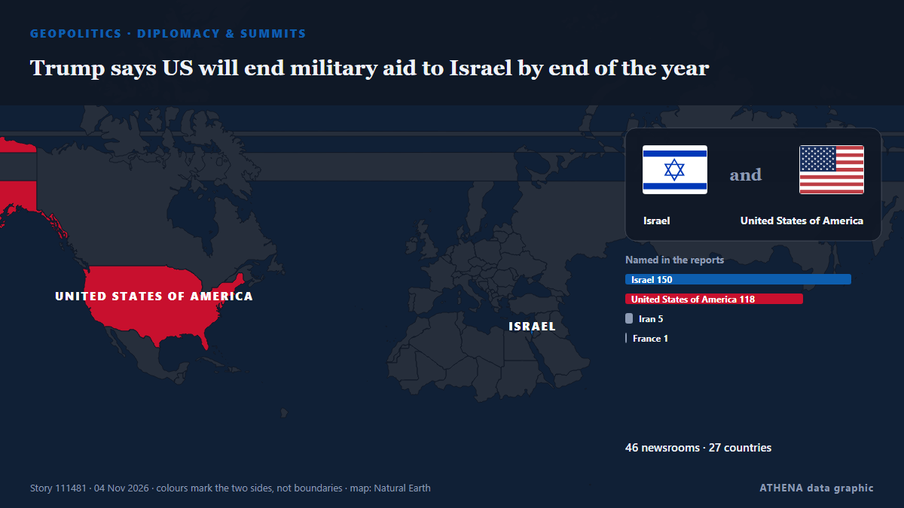

Trump says US will end military aid to Israel by end of the year

Says democrats, left-wing politicians using US financial support to Israel as a talking point to criticise Republicans. von Express Tribune
Unabhängig gemeldet von 48 Medien in 28 Ländern seit dem 3. Nov., zuerst von Express Tribune; die Berichterstattung breitet sich weiter aus. ATHENA stuft das Risiko als mäßig ein (3.3/10), vor allem wegen der Schwere des beschriebenen Schadens und seiner geografischen und sektoralen Reichweite. Die Konfidenz liegt bei 90 % (hoch): 48 Medien bestätigen es unabhängig, bei einer mittleren Verlässlichkeit der Quellen von 75 %. Medien nach Land: Türkei (5), Indien (4), Vereinigte Arabische Emirate (3). Berichterstattung: 3. Nov. bis 3. Nov., 8 Stunden.
Warum es wichtig ist: Sicherheits- und diplomatische Entwicklungen können Bündnisse, Handel und Märkte weit über die direkt beteiligten Länder hinaus verschieben.
Was sich geändert hat: 7 neue Berichte von 4 Redaktionen in den 24 Stunden bis 5. Nov..
Erste Schlagzeile: US midterms latest: Trump says US will stop $4 billion military aid to Israel
Schlagzeilen werden auf Englisch angezeigt, wie veröffentlicht.
Auf einen Blick
Ausgewählt, bewertet und geschrieben nach der veröffentlichten Methodik von ATHENA. Kein Redakteur greift in einzelne Ereignisse ein. So entsteht ATHENA ›
| 03 Nov 10:35 UTC | 1 |
|---|---|
| 03 Nov 12:35 UTC | 20 |
| 03 Nov 14:35 UTC | 11 |
| 03 Nov 16:35 UTC | 9 |
| 03 Nov 18:35 UTC | 4 |
| 03 Nov 20:35 UTC | 2 |
| 03 Nov 22:35 UTC | 3 |
| 04 Nov 00:35 UTC | 3 |
| 04 Nov 02:35 UTC | 1 |
| 04 Nov 04:35 UTC | 1 |
| 04 Nov 06:35 UTC | 2 |
| 04 Nov 08:35 UTC | 2 |
| 04 Nov 10:35 UTC | 1 |
| 04 Nov 12:35 UTC | 1 |
| 04 Nov 14:35 UTC | 0 |
| 04 Nov 16:35 UTC | 1 |
| 04 Nov 18:35 UTC | 0 |
| 04 Nov 20:35 UTC | 0 |
| 04 Nov 22:35 UTC | 1 |
| 05 Nov 00:35 UTC | 1 |
| 05 Nov 02:35 UTC | 1 |
| 05 Nov 04:35 UTC | 0 |
| 05 Nov 06:35 UTC | 0 |
| 05 Nov 08:35 UTC | 0 |
| 05 Nov 10:35 UTC | 0 |
| 05 Nov 12:35 UTC | 1 |
| 05 Nov 14:35 UTC | 2 |
| 03 Nov 14:02 UTC | 0.0 |
|---|---|
| 03 Nov 15:48 UTC | 2.1 |
| 03 Nov 18:21 UTC | 3.3 |
| 05 Nov 15:19 UTC | 3.3 |
Warum diese Zahlen
Bedeutung
Risiko
Konfidenz
Die Berichterstattung – wer berichtete, und wann
Schlagzeile wie veröffentlicht · öffnet das Original- Express Tribune · PakistanTrump says US will stop $4 billion in funding to Israel at end of 2026
- Haaretz (English) · IsraelTrump says U.S. will end annual aid to Israel by year's end
- APA (English) · AserbaidschanTrump says US will stop $4 billion military aid to Israel at end of 2026
- The National · Vereinigte Arabische EmirateUS midterms latest: Polls close across parts of the US
- Arab News · Saudi-ArabienTrump says US will stop $4 billion military aid to Israel at end of 2026
- Al Jazeera English · KatarTrump says US will stop giving Israel aid after year-end
- Anadolu Agency (English) · TürkeiTrump pledges end to US aid for Israel by year’s end
- TRT World · TürkeiUS to cut financial aid to Israel by the end of 2026
- Al-Monitor · Vereinigte StaatenTrump says US will stop $4 billion in funding to Israel at end of 2026
- investingLive (ForexLive) · INTTrump on Israel: The aid gets cut off at year-end
- NDTV · IndienTrump Says US Will Stop $4 Billion Annual Aid To Israel From Year End
- Gulf News · Vereinigte Arabische EmirateTrump says US cutting $3.8 billion annual security assistance to Israel
- Punch · NigeriaUPDATED: US to end $3.8bn annual military aid to Israel — Trump
- Middle East Eye · INTTrump says he plans to cut billions of dollars in aid to Israel
- Free Malaysia Today · MalaysiaTrump says US will stop US$4bil funding to Israel at end of 2026
- Stuff · NeuseelandTrump says US will halt $7B in aid to Israel as country shifts to buying military hardware instead
- to vima · GriechenlandTrump Says US Will End $4 Billion In Aid To Israel After 2026
- Global News (World) · KanadaU.S. to end $4B annual aid to Israel, switching to selling arms: Trump
- Livemint · IndienTrump says US will stop $4 billion annual funding to Israel by year-end, claims deal with Netanyahu
- TASS (English) · RusslandTrump says US to stop financing Israel by year-end
- TRT World · TürkeiTrump declares end to US military aid to Israel by year-end
- France 24 English · FrankreichTrump says US will halt $4 billion in aid to Israel after end of the year
- Middle East Eye · INTTrump says US will end $4bn annual military aid to Israel in 2027
- TASS (English) · RusslandIsrael, Europe can buy any US weapons — Trump
- The National · Vereinigte Arabische EmirateTrump claims he will end military aid to Israel, but figures tell a different story
- Ada Derana · Sri LankaDonald Trump says US will stop $4 billion in funding to Israel at end of 2026
- APA (English) · AserbaidschanTop Israeli financial, security officials said taken off guard by Trump announcing imminent halt to military aid
- Indian Express · IndienTrump says US to end $4 billion Israel aid; jokes he ‘could become Israeli PM’
- France 24 English · FrankreichTrump cuts Israeli military aid: $3.8 billion in security assistance slashed
- The Daily Star — page reader · BangladeschTrump says US will stop $4 billion in funding to Israel at end of 2026
- Nile Post · UgandaTrump says US will stop providing aid to Israel after year-end
- Courthouse News · Vereinigte StaatenUS will halt $4B in aid to Israel as the Mideast ally shifts to buying military hardware, Trump says
- Asharq Al-Awsat (English) · Saudi-ArabienUS Will Halt $4 Billion in Aid to Israel, Trump Says
- Times of India · Indien'We won't be paying Israel': Trump says $4 billion funding to stop end of the year
- The Guardian · Vereinigtes KönigreichTrump claims US will end military aid to Israel by end of this year
- Haaretz (English) · IsraelWhy Trump's pledge to end U.S. military aid to Israel actually suits Netanyahu
- Türkiye Today · TürkeiIsraeli opposition blames Netanyahu after Trump says US will end military aid
- Forbes Business · Vereinigte StaatenThe President’s Proposal To Cut Israel Aid: Less Than Meets The Eye
- Anadolu Agency (English) · TürkeiIsraeli defense officials surprised by Trump’s announcement on ending US aid: Report
- Euronews English · FrankreichTrump says US will end military aid to Israel as Americans vote in midterms